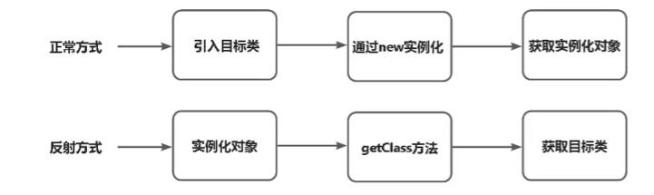

记录
# Java
# 1. JDK、JRE、JVM 三者区别
# 2.Java 中创建对象的几种方式？
- 使用 new 关键字：最常见的方式，这种方式我们还可以调用任意的构造器 (无参的和有参的)
- 使用 Class.newlnstance: 通过 Class 类的 newInstance 创建对象，必须有 public 的无参构造器才行
- 使用 Constructor.newlnstance: 通过 java.langrelect.Constructor 类中的 newlnstance 方法调用有参数的和私有的构造函数。
- 使用 Clone: 通过对象的 clone0 方法创建一个对象的副本。需要对象实现 Cloneable 接口并重写 clone () 方法。
- 使用反序列化：通过将对象转换为字节流并保存到文件或传输到网络，然后再从字节流中重新创建对象。需要对象实现 Serializable
# 3.final、finally、 finalize 的区别
- final 关键字：用于修饰类、方法、变量、入参和对象
应用于类时，表示该类是最终类，不能被其他类继承，
应用于方法时，表示该方法是最终方法，不能被子类重写
应用于变量时，表示该变量是一个常量，只能赋值一次。
应用于入参时，表示该入参在方法内无法被修改。
应用于对象时，该对象的引用不能被修改，但对象本身的状态是可变的。 - finally 关键字：异常处理机制中的一部分，用于定义在 try-catch-finally 块中的 finally 块
不论是否发生异常，finally 块中的代码都会执行
主要用于释放资源、关闭连接等必须确保执行的操作。 - finalize 方法：是一个对象的方法，定义在 Object 类中
在垃圾回收器将对象回收之前调用。
可以重写 finalize 方法，在其中编写对象在被回收前需要进行的清理操作，如释放资源等.
请注意，不推荐使用 finalize 方法进行内存资源的释放，因为它没有被及时执行的保证，也可能导
致性能问题
# 5. 两个对象的 hashCode0 相同，则 equals ( 也一定为 true 吗？
- 两个对象的 hashCode (相同，equals) 不一定为 true;
- 两个对象的 equals 为 true，则两个对象的 hashcode 一定为 true
# 6.&、&&、|、|| 的区别
& 全比较，&& 只要第一个不成立则不再判断
# 7.Java 中的参数传递时传值呢？还是传引用？
在 Java 中，方法参数传递是按值传递的。这意味着在方法调用时，实际上是将参数的值进行拷贝并传递给方法内部使用，而不是直接传递参数本身的引用。
- 对于基本数据类型 (如整数、浮点数等): 传递的是其值的拷贝。任何对参数值的修改都不会影响原始变量。
- 对于 ** 引用类型 (** 如对象、数组等): 传递的是引用的值的拷贝，也就是说方法内部的参数和原始变量将引用同一个对象。虽然我们可以通过方法内部的参数修改对象的状态，但是对于引用本身的修改是不会影响原始变量的。
# 8. 什么是 Java 的序列化，如何实现 Java 的序列化？
定义: 序列化是指将一个对象转换为字节流，以便在网络上传输或保存到文件中。序列化过程还可以通过反序列化将字节流重新转换为对象
实现方式：通过实现 java.io.Serializable 接口。该接口是一个标记接口，没有任何方法定义，只要一个类实现了 Serializable 接口，就表示该类的对象可以被序列化。Java 序列化机制会根据对象的类结构自动进行序列化和反序列化操作。
# 9.Java 中的反射是什么意思？
Java 的反射机制是指在运行状态中，对于任意一个类都能够知道这个类所有的属性和方法；并且对于任意一个对象，都能够调用它的任意一个方法；这种动态获取信息以及动态调用对象方法的功能成为 Java 语言的反射机制
简单的说：在运行时动态地获取、操作和修改类或对象的属性、方法、构造函数等信息的能力，而不需要在编译时预先知道类的具体信息

# 10. 反射的应用场景有哪些？反射有什么优缺点？
# 应用场景
反射是 Java 框架的灵魂技术，很多框架都使用了反射技术，如 spring，Mybatis，Hibernate 等.
JDBC 的数据库的连接
在 JDBC 连接数据库中，一般包括加载驱动，获得数据库连接等步骤。而加载驱动，就是引入相关 Jar 包后，通过 Class.forName (加载数据库的驱动程序
Class.forName ("com.mysgl.cj.jdbc.Driver"):
xml 或 properties 等配置文件加载
Spring 通过 XML 配置模式装载 Bean，也是反射的一个典型例子
装载过程:
- 将程序内 XML 配置文件加载入内存中
- Java 类解析 xml 或者 properties 里面的内容，得到对应实体类的字节码字符串以及相关的属性信息
- 使用反射机制，得到 Class 实例
- 动态配置实例的属性
这样做当然是有好处的不用每次都去 new 实例了，并且可以修改配置文件，比较灵活。
# 反射的优点
** 动态性:** 反射提供了在运行时动态地探索和操作类的能力。它允许我们在运行时获取类的信息、创建对象、调用方法和修改字段的值，从而使程序更加灵活、可扩展和动态适应复杂环境：：反射可以应对一些复杂的场景，如在插件化系统中根据配置文件加载类、动态代理、识别和处理注解等
# 反射的缺点
** 性能问题:** 由于反射涉及到动态解析和调用，所以它通常比直接调用代码性能较低。反射需要进行额外的检查和处理，可能会导致性能下降
** 安全问题:** 反射可以绕过访问控制限制，例如访问私有方法和字段。这可能会导致安全隐患，因此在使用反射时需要小心处理，并确保只在必要情况下使用
# 11. 怎么实现动态代理？
代理模式是一种设计模式，提供了对目标对象额外的访问方式，即通过代理对象访问目标对象，这样可以在不修改原目标对象的前提下，提供额外的功能操作，扩展目标对象的功能
动态代理实现方式:
- JDK 实现: JDK Proxy 基于反射
- 第三方类实现: CGLIB 基于 ASM (一个 Java 字节码操作框架)
# 如何实现动态代理
- 基于接口的 JDK 动态代理
- 定义目标类，即被代理的类
- 通过实现 InvocationHandler 接口来自定义自己的 InvocationHandler; 重写 invoke 方法，在此方法中定义增强逻辑。
- 通过 Proxy.newProxylnstance 方法获得代理对象
- 通过代理对象调用目标方法
- 基于类的 CGLIB 动态代理
- 引入 CGLIB 的相关依赖
- 定义目标类，即被代理的类
- 创建代理类实现 CGLIB 的 Methodinterceptor 接口，并重写 intercept 方法，在此方法中定义增强逻辑。
- 使用 Enhancer 类创建代理对象，设置目标类、回调对象等参数
- 调用代理对象的方法，实现代理行为。
# JDK Proxy 与 CGLIB 的区别
- 基于接口 vs. 基于类:
JDK Proxy 只能代理接口类型，它通过实现指定接口并生成代理对象来实现代理功能
CGLIB 可以代理普通的类，它通过继承目标类，并在子类中重写方法来实现代理。 - 实现方式:
JDK Proxy 是基于反射机制实现的，它利用 Java 的反射 API 动态生成代理对象
CGLIB 使用了字节码生成库，直接操作字节码生成代理类。相比于 JDK 代理的反射调用，CGLIB 的方法调用更快速 - 性能:
由于 CGLIB 是直接对字节码进行操作，所以在创建和执行代理对象时通常比 JDK 代理更快速
JDK Proxy 的性能略低，因为它涉及到反射调用的开销。JDK8 版本已经优化，性能与 CGLIB 差不多。 - 库依赖:
JDK Proxy 是 Java 标准库的一部分，无需额外的依赖
CGLIB 需要引入相关的第三方库
# 12. String 为什么不可变？
String 类本身是 final 的，不可以被继承
String 类内部通过 **private final char value []** 实现，从而保证了引用的不可变和对外的不可见
String 内部通过良好的封装，不去改变 value 数组的值
为什么要设计成不可变？
- 字符串池优化：不可变性允许字符串共享和重用，节省内存空间和提高性能
- 线程安全性：不可变类天然具备线程安全的特性，无需额外同步措施
- 缓存哈希值：不可变性使得字符串的哈希值可以被缓存，提高相关数据结构的性能。
TIPS
可以用反射来改变 String 中 value 的值，所以严格意义上说不一定不可变。
# 13.String、StringBuilder、StringBuffer 的区别？
可变性:
- String 类是不可变类，一旦创建就无法改变其内容。对于每次修改操作 (例如拼接字符串)，都会创建一个新的字符串对象，旧对象则成为垃圾数据，需要等待垃圾回收。它们可以直接在原始对象上进行修改而不创建新的对象
- StringBuilder 和 StringBuffer 类是可变的，这种特性使得在频繁拼接或修改字符串时更高效。
线程安全性:
- String 类是线程安全的，因为它的不可变性保证了多个线程同时访问同一个字符串对象时的安全性
- StringBuilder 类是非线程安全的，它的方法没有进行同步处理。如果在多线程环境下使用 StringBuilder，需要额外来取措施保证线程安全
- StringBuffer 类是线程安全的，它的方法进行了同步处理，因此可以在多线程环境下使用
性能:
- 在单线程环境下，StringBuilder 的性能通常优于 StringBuffer，因为 StringBuilder 不进行同步处理，省去了同步的开销
- 在多线程环境下，由于 StringBuffer 进行了同步处理，可能会带来额外的性能开销。但当线程同步是必需的时候，StringBuffer 是一个可靠的选择。
# 14. String str = "i" 与 String str = new String ("i") 一样吗？
不一样，因为内存的分配方式不一样。
- String str="i" 的方式 JVM 会将其分配到常量池中；
- String str=new String (“i”) 方式，则会被分到堆内存中。
# 15. 接口和抽象类有什么区别
定义关键字不同
- 接口使用关键字 interface 来定义。抽象类使用关键字 abstract 来定义
继承或实现的关键字不同
- 接口使用 implements 关键字定义其具体实现。 抽象类使用 **extends ** 关键字实现继承
子类扩展的数量不同
- 接口的实现类可以有多个
- 抽象类的子类，只能继承一个抽象类，抽象类的子类，只能继承一个抽象类
属性访问控制符不同，方法控制符不同
- 接口中属性的访问控制符只能是 public (接口中的属性默认是 public static final 修饰的)
- 抽象类中的属性访问控制符无限制，可为任意控制符
tip：
- 接口可继承多个父接口
# 16. 什么是浅拷贝和深拷贝？
- 浅拷贝: 只复制指向某个对象的指针，而不复制对象本身，新旧对象共享一块内存
- 深拷贝: 复制并创建一个一摸一样的对象，不共享内存，修改新对象，旧对象保持不变
# 17. Overload、Override、Overwrite 的区别？
在面向对象编程中，有三个概念经常用到: Overload (重载)、Override (重写) 和 Overwrite (覆盖), 这些概念描述了不同的方法或函数之间的关系。
重载 (Overload) :
定义：在同一个类中，可以定义多个具有相同名称但参数列表不同的方法，它们被称为方法的重载
特点:
- 方法名相同，参数列表不同
- 重载方法可以有不同的返回类型
- 重载方法必须在同一个类中
- 重载方法的区分依据是参数的个数、类型或者顺序
重写 (Override)
定义：子类继承自父类时，可以对父类的方法进行重新实现，这被称为方法的重写
特点:
- 子类中的方法与父类中的方法具有相同的名称、参数列表和返回类型
- 子类中的方法不能比父类的方法访问性更严格
- 子类方法抛出的异常不能比父类方法抛出的异常更多
- 子类方法可以覆盖父类方法的实现，提供自己的实现逻辑
覆盖 (Overwrite)
定义：在文件操作中，覆盖 (Overwrite) 通常指的是将已有的文件内容替换为新的内容
特点:
- 覆盖通常发生在文件写入时，用新的内容覆盖原有的内容，使其被替代
- 覆盖可能会导致原文件的内容丢失，因此在进行覆盖操作时要小心。
# 18. Exception 和 Error 有什么区别？
在 Java 中，Exception 和 Error 是两个不同的类，它们都继承自 Throwable 类。下面是它们之间的区别:
Exception (异常) :
Exception 表示在程序执行过程中可能出现的可处理的异常情况。** 它一般由代码逻辑错误、外部条件变化等原因引起，可以通过适当的处理措施来恢复正常的程序执行。**Exception 分为两种类型:
- 受检异常 (Checked Exception) : 编译器要求必须在代码中显式地处理受检异常，否则代码无法通过编译。常见的受检异常包括 IOException、SQLException 等。（用 try-catch-finally）
- 非受检异常 (Unchecked Exception) : 编译器对非受检异常不强制要求进行处理，但可以选择处理或者将其抛给上层调用者处理。常见的非受检异常包括 NullPointerException、ArrayIndexOutOfBoundsException 等
Error (错误)：
Error 是指应用程序通常无法处理或恢复的严重问题，如除零错误
Error 通常表示虚拟机 (JVM) 的错误状态或系统级错误，例如 OutOfMemoryError、StackOverflowError 等
Error 通常意味着应用程序处于不可恢复的状态，因此一般不被捕获和处理
与异常不同，Error 没有规定要求应用程序处理或捕获它们。
# 19. Java 中的 IO 流的分类？说出几个你熟悉的实现类？
在 Java 中，10 流可以根据其功能和作用进行分类。主要分为四种类型：字节流、字符流、缓冲流和对象流
字节流 (Byte Stream): 以字节为单位进行读写操作的流。字节流通常用于处理二进制数据或字节流形式的文本数据。
- InputStream: 字节输入流的抽象基类，是所有字节输入流的超类
- OutputStream: 字节输出流的抽象基类，是所有字节输出流的超类
- 一些实现类包括: FilelnputStream、FileOutputStream、ByteArraylnputStream、ByteArrayOutputStream 等
字符流 (Character Stream): 以字符为单位进行读写操作的流。字符流通常用于处理字符数据，支持 Unicode 编码。
- Reader: 字符输入流的抽象基类，是所有字符输入流的超类
- Writer: 字符输出流的抽象基类，是所有字符输出流的超类
- 一些实现类包括: FileReader、FileWriter、BufferedReader、PrintWriter 等
缓冲流 (Buffered Stream) : 提供了缓冲功能，可以减少实际 IO 操作的次数，提高读写效率
- BufferedInputStream: 字节缓冲输入流，装饰器模式实现
- BufferedOutputStream: 字节缓冲输出流，装饰器模式实现
- BufferedReader: 字符缓冲输入流，装饰器模式实现
- BufferedWriter: 字符缓冲输出流，装饰器模式实现
对象流 (Object Stream): 用于读写 Java 对象的流。可以方便地将对象序列化和反序列化到文件或网络中
- ObjectlnputStream: 对象输入流，用于从流中读取对象
- ObjectOutputStream: 对象输出流，用于将对象写入流
# 20. 常见的异常类有哪些？
RuntimeException (运行时异常)
- NullPointerException: 空指针异常，当对一个对象引用调用方法或访问属性时，对象引用为空
- ArraylndexOutOfBoundsException: 数组下标越界异常，当尝试访问数组的不存在的索引时抛出
- lllegalArgumentException: 非法参数异常，当传递给方法的参数不合法时抛出
- lllegalStateException: 非法状态异常，当对象处于不允许的状态下调用方法时抛出
IOException (输入输出异常) :
- FileNotFoundException: 文件未找到异常，当尝试打开不存在的文件时抛出
- EOFException: 文件结束异常，当从数据流读取数据时到达文件末尾时抛出
- SocketException: 套接字异常，当与套接字相关的操作失败时抛出
SQLException (数据库异常) :
- SQLSyntaxErrorException: SQL 语法错误异常，当执行 SQL 语句时遇到语法错误时抛出
- DataAccessException: 数据访问异常，当访问数据库或数据存储出现问题时抛出
ClassNotFoundException: 类未找到异常，当尝试加载不存在的类时抛出
# 22. ArrayList 和 LinkedList 区别
- 底层数据结构不同，ArrayList 底层是基于数组实现的，LinkedList 底层是基于链表实现的
- 由于底层数据结构不同，他们所适用的场景也不同，ArrayList 更适合随机查找，Linkedlist 更适合删除和添加，查询、添加、删除的时间复杂度不同
- 另外 Arravlist 和 LinkedList 都实现了 List 接口，但是 LinkedList 还额外实现了 Deque 接口，所以 LinkedlList 还可以当做队列来使用
# 24. CopyOnWriteArrayList 的底层原理是怎样的
- 首先 CopyOnWriteArrayList 内也是用时数组来实现的，在向 CopyOnWriteArrayList 添元索时，会复制一个新的数组，写操作在新数进行，读操作在原数组上进行
- 并且，写操作会加锁，防止出现并发写入丢失数据的问题
- 写操作结束之后会把原数组指向新数组
- CopyOnWiteArraylist 允许在写操作时来读取数据，大大提高了读的性能，因此适合读多写少的应用场，但是 CopyOnWiteAraylist 会比较占内存，同时可能读到的数据不是实时最新的数据，所以不适合实时性要求很高的场景
# 30. HashMap 的扩容机制原理
1.7 版本
- 先生成新数组
- 遍历老数组中的每个位置上的链表上的每个元素
- 取每个元素的 key，并基于新数组长度，计算出每个元素在新数组中的下标
- 将元素添加到新数组中去
- 所有元素转移完了之后，将新数组赋值给 HashMap 对象的 table 属性
1.8 版本
- 先生成新数组
- 遍历老数组中的每个位置上的链表或红黑树
- 如果是链表，则直接将链表中的每个元素重新计算下标，并添加到新数组中去
- 如果是红黑树，则先遍历红黑树，先计算出红黑树中每个元素对应在新数组中的下标位置
- 统计每个下标位置的元素个数
- 如果该位置下的元素个数超过了 8，则生成一个新的红黑树，并将根节点的添加到新数组的对应位置
- 如果该位置下的元素个数没有超过 8，那么则生成一个链表，并将链表的头节点添加到新数组的对应位置
- 所有元素转移完了之后，将新数组赋值给 HashMap 对象的 table 属性
Tips:
1.7 版本的 hash 链表的部分是头插法，不需要遍历到尾部，更快
1.8 版本的 hash 链表的部分是尾插法，因为要判断是否大于 8，大于 8 就转换成红黑树，而知道数量需要遍历链表，则用尾插法
# 32. Java 死锁如何避免
造成死锁的几个原因
- 一个资源每次只能被一个线程使用
- 一个线程在阻塞等待某个资源时，不释放已占有资源
- 一个线程已经获得的资源，在未使用完之前，不能被强行剥夺
- 若干线程形成头尾相接的循环等待资源关系
这是造成死锁必须要达到的 4 个条件，如果要避免死锁，只需要不满足其中某一个条件即可。
而其中前 3 个条件是作为锁要符合的条件，所以要避免死执就需要打破第 4 个条件，不出现循环等待锁的关系
在开发过程中:
- 要注意加锁顺序，保证每个线程按同样的顺序进行加锁
- 要注意加锁时限，可以针对所设置一个超时时间
- 要注意死锁检查，这是一种预防机制，确保在第一时间发现死锁并进行解决
# 34. Java 中有哪些类加载器
JDK 自带有三个类加载器: bootstrap ClassLoader、ExtClassLoader、AppClassLoader。
- BootStrapClassLoader 是 ExtClassLoader 的父类加载器，默认负责加载 % JAVA HOME% lib 下的 iar 包和 cass 文件
- ExtClassLoader 是 AppClassLoader 的父类加载器，负责加载 % JAVA HOME%/lib/ext 文件夹下的 jar 包和 class 类
- AppClassLoader 是自定义类加载器的父类，负责加载 lasspath 下的类文件
# 39. #{} 和 ${} 的区别是什么？
#{} 是预编译处理、是占位符，${} 是字符串替换、是拼接符。
Mybatis 在处理 #{} 时，会将 sql 中的 #{} 替换为？号，调用 PreparedStatement 来赋值
Mybatis 在处理 {} 替换成变量的值，调用 Statement 来赋值
使用 #{} 可以有效的防止 SQL 注入，提高系统安全性
# 60. Sychronized 和 ReentrantLock 的区别
- Sychronized 是一个关键字，ReentrantLock 是一个类
- Sychronized 会自动的加锁与释放锁，ReentrantLock 需要程序员手动加锁与释放锁
- Sychronized 的底层是 JVM 层面的锁，ReentrantLock 是 API 层面的锁
- Sychronized 是非公平锁，ReentrantLock 可以选择公平锁或非公平锁
- Sychronized 锁的是对象，锁信息保存在对象头中，ReentrantLock 通过代码中 int 类型的 state 标识来标识锁的状态
- Sychronized 底层有一个锁升级的过程
# Java 类的加载过程
请你说说 Java 类的加载过程_说说类加载的流程 - CSDN 博客
- 什么是类的加载过程
- 一个 Java 文件从编码完成到最终运行，一般会经历两个阶段：编译期、运行期。编译，即通过 javac 命令，将 Java 文件转化为二进制字节码文件，即.class 文件；运行，则是将.class 文件交给 JVM 执行。而本文所说的类加载过程就是将.class 文件中类的元信息加载进内存，创建 Class 对象并进行解析、初始化类变量等的过程
JVM 并不是一开始就会将所有的类加载到内存，而是用到某个类，才会去加载，只加载一次，后续会说到类的加载时机 - 类加载详解
- 类加载分为三个部分：加载、连接、初始化
2.1 加载
类的加载主要的职责为将.class 文件的二进制字节流读入内存 (JDK1.7 及之前为 JVM 内存，JDK1.8 及之后为本地内存)，并在堆内存中为之创建 Class 对象，作为.class 进入内存后的数据的访问入口。在这里只是读入二进制字节流，后续的验证阶段就是要拿二进制字节流来验证.class 文件，验证通过，才会将.class 文件转为运行时数据结构
2.2 连接
类的连接分为三个阶段：验证、准备、解析。
验证：该阶段主要是为了保证加载进来的字节流符合 JVM 的规范，不会对 JVM 有安全性问题。其中有对元数据的验证，例如检查类是否继承了被 final 修饰的类；还有对符号引用的验证，例如校验符号引用是否可以通过全限定名找到，或者是检查符号引用的权限 (private、public) 是否符合语法规定等。
准备：准备阶段的主要任务是为类的类变量开辟空间并赋默认值。
- 静态变量是基本类型（int、long、short、char、byte、boolean、float、double）的默认值为 0
- 静态变量是引用类型的，默认值为 null
- 静态常量默认值为声明时设定的值
例如：public static final int i = 3; 在准备阶段，i 的值即为 3
解析：该阶段的主要职责为将 Class 在常量池中的符号引用转变为直接引用，此处针对的是静态方法及属性和私有方法与属性，因为这类方法与私有方法不能被重写，静态属性在运行期也没有多态这一说，即在编译器可知，运行期不可变，所以适合在该阶段解析，譬如类方法 main 替换为直接引用，为静态连接，区别于运行时的动态连接 (后续我会写关于 JVM 内存结构的文章，在讲解栈帧时会介绍动态链接)。
符号引用即字符串，说白了可以是一个字段名，或者一个方法名；直接引用即偏移量，说白了就是类的元信息位于内存的地址串，例如，一个类的方法为 test ()，则符号引用即为 test，这个方法存在于内存中的地址假设为 0x123456，则这个地址则为直接引用。
2.3 初始化
该阶段主要是为类的类变量初始化值的，初始化有两种方式：
- 在声明类变量时，直接给变量赋值
- 在静态初始化块为类变量赋值
# java 锁有哪些，Sychronized 是什么锁
Java 中常见的各种锁（非常全）_java 滑块锁 - CSDN 博客
# 线程创建方式
- 方式一：继承于 Thread 类
- 方式二：实现 Runnable 接口
- 方式三：实现 Callable 接口
- 方式四：使用线程池
- 方式五：使用匿名类
# 数据结构
# 跳表
跳表的原理与实现
将单链表先进行排序，然后针对 有序链表 为了实现高效的查找，可以使用跳表这种数据结构。
其根本思想是 二分查找 的思想。
跳表的前提条件是 针对 有序的单链表 ，实现高效地查找，插入，删除。
Redis 中的 有序集合 sorted set 就是用跳表实现的。
# MySQL、Redis
# MySQL 索引实现有哪些
MySQL 索引的概念以及七种索引类型介绍_什么是数据库索引，mysql 常见的索引类型有哪些？-CSDN 博客
# 1 索引的概念
索引（在 MySQL 中也叫做 “键（key）”）是存储引擎用于快速找到记录的一种数据结构，这也是索引最基本的功能。
索引对于良好的性能非常关键。数据量越大时，索引对性能的影响也越重要，好的索引可以将查询性能提高几个数量级。在数据量较小且负载较低时，不恰当的索引对性能的影响可能还不明显，但是在数据量逐渐增大时，糟糕的索引会使 MySQL 的性能急剧的下降。
索引优化是查询性能优化最有效的手段。
# 2 索引的类型
按照功能逻辑区分，MySQL 目前主要有以下索引类型：
- 主键索引
- 数据列不允许重复，不允许为 NULL，一个表只能有一个主键。
- ALTER TABLE table_name ADD PRIMARY KEY (column);
- 普通索引
- MySQL 中基本索引类型，没有什么限制，允许在定义索引的列中插入重复值和 NULL 值。一个表允许多个列创建普通索引。
- ALTER TABLE table_name ADD INDEX index_name (column);
- 唯一索引
- 索引列中的值必须是唯一的，但是允许 NULL 值。建立唯一索引的目的大部分时候都是为了该属性列的数据的唯一性，而不是为了查询效率。一个表允许多个列创建唯一索引。
- ALTER TABLE table_name ADD UNIQUE (column);
- 全文索引
- 主要是为了快速检索大文本数据中的关键字的信息。字段长度比较大时，如果创建普通索引，在进行 like 模糊查询时效率比较低，这时可以创建全文索引，基于倒排索引，类似于搜索引擎。MyISAM 存储引擎支持全文索引，InnoDB 存储引擎在 MySQL 5.6.4 版本中也开始支持全文索引。
- ALTER TABLE table_name ADD FULLTEXT (column);
- 前缀索引
- 在文本类型如 BLOB、TEXT 或者很长的 VARCHAR 列上创建索引时，可以使用前缀索引，数据量相比普通索引更小，可以指定索引列的长度，但是数值类型不能指定。
- ALTER TABLE table_name ADD KEY(column_name(prefix_length));
- 组合索引
- 指多个字段上创建的索引，只有在查询条件中使用了创建索引时的第一个字段，索引才会被使用。使用组合索引时遵循最左前缀原则。
- 主键索引、普通索引、唯一索引等都可以使用多个字段形成组合索引。例如，ALTER TABLE table_name ADD INDEX index_name (column1, column2, column3);
- 空间索引
- MySQL 在 5.7 之后的版本支持了空间索引，而且支持 OpenGIS 几何数据模型。MySQL 在空间索引这方面遵循 OpenGIS 几何数据模型规则。
# MySQL 索引有哪些实现方式
什么是 B+Tree 索引，B+Tree 索引的构建过程，跟二叉树、红黑树的对比
为什么数据库存储用 B+tree 索引，局部性原理是什么，为什么推荐自增 id
MySQL 有哪些索引，聚集索引，二级索引，覆盖索引区别，回表是什么
怎么加索引，索引的使用场景有哪些，加索引一定好吗
索引失效的场景，引发什么后果
EXPLAIN 关键字查看 MySQL 是否使用索引
# 23. B 树和 B + 树的区别，为什么 Mysql 使用 B + 树
B 树的特点
- 节点排序
- 一个节点可以存多个元素，多个元素也排序了
B + 树的特点
- 拥有 B 例的特点
- 子节点之间有指钊
- 非叶子节点上的元素仙叶子节点上都冗余了，也就是叶子节点中存储了所有的元素，并且排好顺序
Mysq 索引使用的是 B+，因为索引是用来加快查询的，而 B + 树通过对数据排序所以是可以提高查询速度的
然后通过一个节点中可以有储多个元素，从而可以使得 B + 树的高度不会太高，在 Mysql 中一个 Innodb 页就是一个 B + 树节点，一 Innodb 页默认 16kb，所以一般情况下一颗两层的 B + 可以存 2000 万行左右的数
然后通过利用 B + 树叶子节点存储了所有数据并且进行了排序，并且叶子节点之间有指针，以微了的支持全表描，范围查找等 SQL 语句
# 38. Mybatis 的优缺点
优点:
- 基于 SOL 语句编程，相当灵活，不会对应用程序或者数据库的现有设计造成任何影响，SQL 写在 XML 里，解除 sql 与程序代码的耦合，便于统一管理；提供 XML 标签，支持编写动态 SQL 语句，并可重用。
- 与 JDBC 相比，减少了 50% 以上的代码量，消除了 JDBC 大量几余的代码，不需要手动开关连接；
- 很好的与各种数据库兼容 (因为 MyBatis 使用 JDBC 来连接数据库，所以只要 JDBC 支持的数据库 MyBatis 都支持)
- 能够与 Spring 很好的集成
- 提供映射标签，支持对象与数据库的 ORM 字段关系映射，提供对象关系映射标签，支持对象关系组件维护
缺点:
- SQL 语句的编写工作量较大，尤其当字段多、关联表多时，对开发人员编写 SQL 语句的功底有一定要求
- SQL 语句依赖于数据库，导致数据库移植性差，不能随意更换数据库。
# 40. Mysql 慢查询该如何优化？
- 检查是否走了索引，如果没有则优化 SQL 利用索引
- 检查所利用的索引，是否是最优索引
- 检查所查字段是否都是必须的，是否查询了过多字段，查出了多余数据检查表中数据是否过多，是否应该进行分库分表了
- 检查数据库实例所在机器的性能配置，是否太低，是否可以适当增加资源
# 41. Mysql 锁有哪些，如何理解
- 按锁粒度分类
- 行锁：锁某行数据，锁粒度最小，并发度高
- 表锁：锁整张表，锁粒度最大，并发度低
- 间隙锁：锁的是一个区间
- 读写分类
- 共享锁：也就是读锁。一个事务给某行数据加了读锁，其他事务也可以读，但是不能写
- 排它锁：也就是写锁，一个事务给某行数据加了写锁，其他事务不能读，也不能写
- 还可以分为
- 乐观锁：并不会真正的去锁某行记录，而是通过一个版本号来实现的
- 悲观锁：上面所的行锁、表锁等都是悲观锁
- 在事务的隔离级别实现中，就需要利用锁来解决幻读
# 42. Redis 和 Mysql 如何保证数据一致
- 先更新 Mysql，再更新 Redis，如果更新 Redis 失败，可能仍然不一致
- 先删除 Redis 存数据，再更新 Mysql，再次查询的时候在将数据添加到存中，这种方案能解决 1 方案的问题，但是在高并发下性能较低，而且仍然会出现数据不一致的问题，比如线程 1 删除了 Redis 缓存数据，正在更新 Mysql，此时另外一个查询再查询，那么就会把 Mysql 中老数据又查到 Redis 中
- 延时双删，步骤是：先删除 Redis 存数据，再更新 Mysql，延几百毫秒再删除 Redis 存数据，这样就算在更新 Mysql 时，有其他线程读了 Mysql，把老教据读到了 Redis 中，那么也会被删除掉，从而把数据保持一致
# 43. Redis 有哪些数据结构？分别有哪些典型的应用场景？
Redis 的数据结构有:
- 字符串 string: 可以用来做最简单的数，可以存某个简单的字符串，也可以存某个 json 格式的字符审，Redis 分布式锁的实现就利用了这种数结构，还包括可以实现计数器、Session 共享、分布式 ID
- 哈希表 hash: 可以用来存储一些 key-value 对，更适合用来存储对象
- 列表 list: Redis 的列表通过命令的组合，既可以当做栈，也可以当做队列来使用，可以用来缓存类似微信公众号、微博等消息流数据
- 集合 set: 和列表类似，也可以存储多个元素，但是不能重复，集合可以进行交集、并集、差集操作，从而可以实现类似，我和某人共同关注的人、朋友圈点赞等功能
- 有序集合 zset: 集合是无序的，有序集合可以设置顺序，可以用来实现排行榜功能
# MVCC 机制，RC 级别解决脏读问题，RR 级别怎么解决不可重复读问题
一图看懂 MVCC 机制，RC 级别解决脏读问题，RR 级别怎么解决不可重复读问题【MySQL 系列】_mvcc 实现 rr 和读提交 - CSDN 博客
脏读是怎么产生的，即事务 A 更改了某条数据，事务 B 读取，随后事务因为某些原因回滚了，此时事务 B 读的数据就是 “脏数据”，称为脏读。产生脏读的原因也很简单，事务 B 读取了事务 A 未提交的数据。因此读已提交（只能读取事务提交后的数据）能解决脏读问题。
不可重复读问题，是事务 A 读取了某条数据，随后事务 B 更改了这条数据，事务 A 再次读取，发现数据不一致了（即使读已提交，也不能解决不可重复读问题，因为事务 B 如果已经提交了事务，此时读已提交隔离级别下是可以读到的，这里也涉及到了 MVCC 机制，后面会详细讲），因此读已提交解决不了不可重复读问题。
MVCC（Mutil-Version Concurrency Control）多版本并发控制机制，实现了 MySQL 在 InnoDB 引擎下 RC 级别和 RR 级别下对数据库的并发访问，每次 select 操作会访问数据库中的版本链记录，其他事务可以修改这条记录，而 select 根据当前隔离级别去版本链中找到对应的版本记录，实现了读 - 写，写 - 读的并发执行，提升了系统的性能。
先解析三个概念，当前读、快照读和 ReadView。
当前读：读的都是最新版本的数据，会对数据进行加锁操作，防止其他事务修改当前数据。是悲观锁的一种实现方式。insert、update、select …for update、select…lock in share mode 都是当前读；
快照读：最普通的不加锁的 select 读到的数据，读到的不一定是最新数据，有可能是之前历史版本的数据；
ReadView：快照读的一种形式，MySQL 执行 MVCC 提取数据的依据；本质是一个数据结构，其中包括几下几个部分：
- m_ids：当前活跃的事务 ID 集合（开启但未提交的事务 ID）；
- min_trx_ids: 最小活跃事务 ID，小于它说明事务已经提交；
- max_trx_ids: 预分配的事务 ID（下一个事务开启分配的事务 ID），即当前最大事务 ID+1；大于它说明该事物是 ReadView 生成之后才开启；
- creator_trx_id:ReadView 创建者的事务编号；
版本链：MySQL 数据库中，每条数据除肉眼可见的数据之外，还有几个隐藏字段：
1.db_trx_id: 记录最近修改这条记录的事务 ID；
2.db_roll_pointer: 回滚指针，指向指向这条数据的上一个版本记录；
3.db_row_id: 隐藏的自增 ID（隐藏的自增主键），如果表没有主键，InnoDB 会自动以 db_row_id 生成主键索引；
实际上，RC 和 RR 两个隔离级别，实现的主要区别在于 ReadView 的时机不一样，RC 隔离级别下，每次快照读都会生成一个 ReadView；而 RR 级别下，只有在第一次快照读时生成 ReadView，后面会延续使用；事务根据生成的 ReadView 去版本链中寻找自己能够访问的数据，最后得到所读的数据；而这个寻找可读数据的规则就至关重要了。
# Redis 16 个常见使用场景
Redis 16 个常见使用场景_redis 用途 - CSDN 博客
# 分布式锁 Redisson 的使用，看门狗机制
分布式锁 Redisson 的使用，看门狗机制_分布式锁使用了啥，看门狗机制，锁的默认超时时间是多少 - CSDN 博客
# 如何使用 redis 做一个定时任务？
如何使用 redis 做一个定时任务？_redis 定时任务 - CSDN 博客
# Spring
# 21. ApplicationContext 和 BeanFactory 有什么区别
BeanFactory 是 Spring 中非常核心的组件，表示 Bean 工厂，可以生成 bean，维护 bean，
而 ApplicationContxt 继承了 Beanfactory，所以具有 BeanFactory 的特点。
ApplicationContext 除了继承 BeanFactory 之外，还继承了诸如 EnvironmentCapable、MessageSource、ApplicationEventPublisher 等接口，从而 ApplicationContext 还有获取系统环境变量、国际化、事件发布等功能，这是 BeanFactory 不具备的。
# 48. Spring Boot 是如何启动 Tomcat 的
- 首先，SpringBoot 在启动时会先创建一个 Spring 容器
- 在创建 Spring 容器时程中，会 @ConditionalOnClass 技术来判新当前 classpath 中是否存在 Tomcat 依赖，如果存在会生成一个启动 Tomcat 的 Bean
- Spring 容器创建完之后，就会获取启动 Tomcat 的 Bean，并创建 Tomcat 对象，并绑定端口等，然后启动 Tomcat
# 49. Spring Boot 中常用注解及其底层实现
- @SpringBootApplication 注解：这个注解标识了一个 SpringBoot 工程，它实际上是另外三个注解的组合，这三个注解是:
- @SpringBootConfiquration: 这个注解实际就是一个 @Configuration，表示启动类也是一个配置类
- @EnableAutoConfiquration: 向 Spring 容器中导入了一个 Selector，用来加载 ClassPath 下 SpringFatories 中所定义的自动配置类，将这些自动动载为配置 Bean
- @ComponentScan: 标识扫描路径，因为默认是没有配置实际扫描路径，所以 SpringBoot 扫描的路径是启动类所在的当前目录
- @Bean 注解：用来定义 Bean，类似于 XML 中的 bean > 标签，Spring 在启动时，会对加了 @Bean 注解的方法进行解折，将方法的名字做为 beanName，并通过执行方法得到 bean 对象
- @Controller、@Service、 @ResponseBody、@Autowired 等
# 52. Spring 优点
轻量级
控制反转（IOC）、依赖注入
切片编程（AOP）
容器
MVC 框架
事务管理
异常处理
可拓展性
# Spring IOC 的理解
控制反转
整个 IOC 容器创建的流程和步骤如下：
- 向 bean 工厂中设置一些参数
- 加载解析 bean 对象
- BeanPostProcessor 的注册功能
- 通过反射的方式讲 BeanDefinition 对象实例化成具体的 bean 对象
- bean 对象的初始化过程
- 生成完整的 bean 对象
- 通过 getBean 方法可以直接获取
- 销毁过程
# spring AOP 的理解
面向切面编程（AOP）：允许程序员模块化横向业务逻辑，或定义核心部分的功能，例如日志管理和事务管理。
在 Spring AOP 中，切面通过带有 **@Aspect** 注解的类实现
通知 (Advice)：通知表示在方法执行前后需要执行的动作。实际上它是 Spring AOP 框架在程序执行过程中触发的一些代码。有前置通知、后置通知、环绕通知等
动态代理：代理是将通知应用到目标对象后创建的对象。从客户端的角度看，代理对象和目标对象是一样的。
# 事务
事务是逻辑上的一组操作，要么都执行，要么都不执行。
# 事务的特性（ACID）
- 原子性（
Atomicity）：事务是最小的执行单位，不允许分割。事务的原子性确保动作要么全部完成，要么完全不起作用； - 一致性（
Consistency）：执行事务前后，数据保持一致，例如转账业务中，无论事务是否成功，转账者和收款人的总额应该是不变的； - 隔离性（
Isolation）：并发访问数据库时，一个用户的事务不被其他事务所干扰，各并发事务之间数据库是独立的； - 持久性（
Durability）：一个事务被提交之后。它对数据库中数据的改变是持久的，即使数据库发生故障也不应该对其有任何影响。
🌈 这里要额外补充一点：只有保证了事务的持久性、原子性、隔离性之后，一致性才能得到保障。也就是说 A、I、D 是手段，C 是目的
# 事务管理
- 编程式事务管理
通过 TransactionTemplate 或者 TransactionManager 手动管理事务，实际应用中很少使用
- 声明式事务管理
推荐使用（代码侵入性最小），实际是通过 AOP 实现（基于 @Transactional 的全注解方式使用最多）。
使用 @Transactional 注解进行事务管理的示例代码如下：
@Transactional(propagation = Propagation.REQUIRED) | |
public void aMethod { | |
//do something | |
B b = new B(); | |
C c = new C(); | |
b.bMethod(); | |
c.cMethod(); | |
} |
# 54. Spring 事务什么时候会失效？
spring 事务的原理是 AOP，进行了切面增强，那么失效的根本原因是这个 AOP 不起作用了！常见情况有如下几种
- 发生自调用，类里面使用 this 调用本类的方法 (this 通常省略)，此时这个 this 对象不是代理类，而是 UserService 对象本身！
- 解决方法很简单，让那个 this 变成 UserService 的代理类即可！
- 方法不是 public 的: @Transactional 只能用于 public 的方法上，否则事务不会失效，如果要用在非 public 法上，可以开启 AspectJ 代理模式
- 数据库不支持事务
- 没有被 spring 管理
- 异常被吃掉，事务不会回滚 (或者抛出的异常没有被定义，默认为 RuntimeException)
# 55. Spring 中 Bean 是线程安全的吗
Spring 本身并没有针对 Bean 做线程安全的处理，所以:
- 如果 Bean 是无状态的，那么 Bean 则是线程安全的
- 如果 Bean 是有状态的，那么 Bean 则不是线程安全的
另外，Bean 是不是线程安全，跟 Bean 的作用域没有关系，Bean 的作用域只是表示 Bean 的生命周期范围，对于任何生命固期的 Bean 都是一个对象，这个对象是不是线程安全的，还是得看这个 Bean 对象本身。
tips：
有状态对象 (Stateful Bean) ：就是 ** 有实例变量的对象，可以保存数据，是非线程安全的。** 每个用户有自己特有的一个实例，在用户的生存期内，bean 保持了用户的信息，即 “有状态”；一旦用户灭亡（调用结束或实例结束），bean 的生命期也告结束。即每个用户最初都会得到一个初始的 bean。
无状态对象 (Stateless Bean)：就是 ** 没有实例变量的对象，不能保存数据，是不变类，是线程安全的。**bean 一旦实例化就被加进会话池中，各个用户都可以共用。即使用户已经消亡，bean 的生命期也不一定结束，它可能依然存在于会话池中，供其他用户调用。由于没有特定的用户，那么也就不能保持某一用户的状态，所以叫无状态 bean。但无状态会话 bean 并非没有状态，如果它有自己的属性（变量），那么这些变量就会受到所有调用它的用户的影响，这是在实际应用中必须注意的。
# Spring @Configuration 注解
Spring @Configuration 注解_springconfiguration 注解 - CSDN 博客
从 Spring3.0 ， @Configuration 用于定义配置类，可替换 xml 配置文件，被注解的类内部包含有一个或多个被 @Bean 注解的方法，这些方法将会被 AnnotationConfigApplicationContext 或 AnnotationConfigWebApplicationContext 类进行扫描，并用于构建 bean 定义，初始化 Spring 容器。
注意： @Configuration 注解的配置类有如下要求：
- @Configuration 不可以是
final类型； - @Configuration 不可以是匿名类；
- 嵌套的 configuration 必须是静态类。
# Spring 中 Bean 及 @Bean 的理解与 new 对象的区别
spring 有一个 Ioc 容器：Spring 容器是 Spring 框架的核心。容器将创建对象，把它们连接在一起，配置它们，并管理他们的整个生命周期从创建到销毁。Spring 容器使用依赖注入（DI）来管理组成一个应用程序的组件。这些对象被称为 Spring Beans。 一些对象创建和使用完毕之后不会被销毁，放进对象池（某种集合）以备下次使用，下次再需要这个对象，不 new，直接从池里取，节省时间，也就是说我们可以随时使用和销毁。
同理 Spring 的 @Bean 注解用于告诉方法，产生一个 Bean 对象，然后这个 Bean 对象交给 Spring 管理。产生这个 Bean 对象的方法 Spring 只会调用一次，随后这个 Spring 将会将这个 Bean 对象放在自己的 IOC 容器中。
而使用 new 关键字创建的对象属于强引用对象，所谓强引用，就是 jvm 垃圾回收机制永远不会回收这类对象，这时候需要手动移除引用。如果没有移除，这个对象将一直存在，久而久之，会引起内存泄露问题。
垃圾回收 (Garbage Collection) 是 Java 虚拟机 (JVM) 垃圾回收器提供的一种用于在空闲时间不定时回收无任何对象引用的对象占据的内存空间的一种机制。
强引用（Strong Reference）：如“Object obj = new Object（）”，这类引用是Java程序中最普遍的。只要强引用还存在，垃圾收集器就永远不会回收掉被引用的对象。
new对象是因为类的构造方法一旦被修改，new的对象就出错了，如果是用了spring，就不用理会构造方法是否被修改，而拿来用就可以。
总的来说：Bean 和 new 但是创建对象，但是 Bean 所创建的对象会集中放在一个容器中方便管理
# @Autowired 与 @Resource 的区别（详细）
@Resource 的作用相当于 @Autowired，只不过 **@Autowired 按 byType 自动注入 **，而 **@Resource 默认按 byName 自动注入 ** 罢了。
@Resource 有两个属性是比较重要的，分是 name 和 type，Spring 将 @Resource 注解的 name 属性解析为 bean 的名字，而 type 属性则解析为 bean 的类型。所以如果使用 name 属性，则使用 byName 的自动注入策略，而使用 type 属性时则使用 byType 自动注入策略。如果既不指定 name 也不指定 type 属性，这时将通过反射机制使用 byName 自动注入策略。